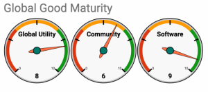
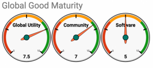

I. Executive Summary
Absenteeism, or unscheduled absence from work, is a persistent problem in health facilities worldwide. The cause of absenteeism among health workers is multifaceted but the net effects are clear and highly disruptive to already-struggling health services. Most importantly, reduced numbers of staff result in diminished service provision and compromised service quality, as those health workers that do report to work are often overburdened with the tasks of their absent colleagues. This retards the ability of governments to achieve quality health outcomes for their citizens and reach goals like universal health coverage (UHC).
Tracking attendance, as part of a comprehensive package of performance management and retention strategies, can help decrease absenteeism and promote greater transparency and accountability in the health sector. In the spirit of trust but verify, biometric methods of identification and collection of attendance data can help ministries of health track if workers are on the job and how long they are working each day.
In Uganda, IntraHealth added a prototype time and attendance tracking module into the Ministry of Health’s version of iHRIS, the flagship human resources solution for health systems and a global public good. Initial results are very encouraging. Unapproved absences dropped 62% across 4,500 pilot facilities as health outcomes improved. The Ugandan program team is now challenged with rolling out their absenteeism system nationwide. At the same time, ministries of health in other countries are looking for similar functionality for their iHRIS deployments as well as biometric identity confirmation for users of OpenMRS, the open source medical record system platform for developing countries.
In Fighting Absenteeism with Biometrics, IntraHealth International proposes to work with Jembi Health Systems to build on the Ugandan pilot and develop a time and attendance monitoring module for the core iHRIS code base and a biometric user identity system for the OpenMRS code base. This OpenMRS module will provide a much-needed biometric identity functionality to help ministries of health, as well as their constituent facilities, to track and manage health worker attendance and user identities with confidence. These modules will benefit the Ugandan Ministry of Health immediately and will allow the more than 20 other countries that use iHRIS and OpenMRS to deploy time and attendance tracking into their systems, enhancing the ability of human resource managers and facility administrators to mitigate health worker absenteeism and increase the quality and availability of service delivery.
II. Consortium Team
For 39 years in 100 countries, IntraHealth International has partnered with local communities to make sure health workers are present where they’re needed most, ready to do the job, connected to the technology they need, and safe to do their very best work. IntraHealth International has a long history in developing successful data tools for digital health applications. From mobile apps to management software to multi-language interactive voice response, we offer health workers and managers the tools and technology they need to do their very best work.
We developed iHRIS, a free and open source software for managing health workforce information, that is utilized in over 20 countries around the world. iHRIS helps countries in low-resource settings capture high-quality data on health worker numbers, skills, qualifications, locations, and more. With this information, nations can address health workforce shortages and solve other challenges across the health sector and beyond.
The time and attendance module development will be led by the following IntraHealth staff and supported by a full range of health experts, project managers, and back-up software developers:
Luke Duncan, Digital Health Assistant Director, has over 20 years of experience in software development, including leading the developing of iHRIS, the flagship human resources solution for global health, and multiple data interoperability standards and reference designs to connect iHRIS, DHIS2, and OpenMRS.
Richard Stanley, Senior Technical Advisor, has over 20 years of experience in information and communication technologies, including high-quality research and rapid data analytics for monitoring and evaluations in Somalia, South Sudan, Uganda, Egypt, and Sudan. He holds a PhD from the University of Oxford, UK.
Dennis Kibiye, Informatics Developer, has eight years of experience in software development, including leading the Ugandan customization and configuration of iHRIS, its nationwide deployment, and the development of the time and attendance prototype module.
Nobert Mijumbi, Regional Health Workforce Technologist, has eight years of experience in software development, including supporting the Ugandan customization and configuration of iHRIS and the development of the time and attendance prototype module.
Dana Acciavatti, Digital Health Senior Portfolio Manager, has 17 years of experience strengthening systems that support health workers, including leading project management for IntraHealth's portfolio of digital health projects and iHRIS in particular.
Jembi Health Systems is an African non-profit company, headquartered in South Africa, and specializing in digital health and open source software development and implementation. Jembi has a successful track record developing and implementing open source software in the health sector including in a number of African countries.
It has contributed to many open source software development projects, including OpenMRS, OpenHIM, and OpenHIE. Jembi curates the reference technology for the interoperability layer (www.openhim.org) of theOpenHIE and related reference profiles like Hearth.
The following Jembi staff will support this initiative:
Carl Fourie, Senior Program Manager, has ten years of experience providing insight and guidance to architectural teams and currently leads Jembi's OpenHIE activities.
Pierre Dane, Director of Technology, has over 15 years of technical experience and leads Jembi’s technical division with a strong focus on systems development and interoperability.
III. Project Description
Problem Statement
Absenteeism, or unscheduled absence from work, is a persistent problem in health facilities worldwide. The cause of absenteeism among health workers is multifaceted and the result of factors both external and internal to each individual, such as weak workforce leadership or low levels of motivation and compensation. The net effects are clear and highly disruptive to already-struggling health services:
Reduced numbers of staff result in diminished service provision and compromised service quality, as those health workers that do report to work are often overburdened with the tasks of their absent colleagues.
Staff who are absent from their assigned duty stations may still be counted—and compensated—as full-time employees, resulting in payroll fraud that robs governments of financial resources for health programs.
Absenteeism in the face of pandemic threats is particularly alarming, as an unwillingness to report to work in the midst of an emergency only compounds the crisis and erodes patients’ trust in the health system.
Finally, minimum staffing levels are required for governments to achieve quality health outcomes for their citizens and reach goals like universal health coverage (UHC).
Tracking attendance, as part of a comprehensive package of performance management and retention strategies, can help decrease absenteeism and promote greater transparency and accountability in the health sector. In the spirit of trust but verify, biometric methods of identification and collection of attendance data can help ministries of health track if workers are on the job, and how long they are working each day. A number of biometric identification equipment manufacturers, such as SimPrints, have hardware on the market in sub-Saharan Africa with published APIs that can connect to smartphones or laptops to provide data for the attendance record.
iHRIS Time and Attendance Module
In Uganda, the government sought a way to incorporate time and attendance tracking, attendance monitoring tools, and biometric identity management into their version of iHRIS, the flagship human resources solution for health systems and a global public good, that is used by over 20 low and middle income countries to manage health workforce data, including Uganda, Tanzania, Kenya, Namibia, Botswana, and more.
Responding to this need, IntraHealth created a prototype iHRIS module for tracking clinical staff in ministry of health facilities. This module incorporates both biometric machines and mobile phones to scan staff fingerprints and produce duty rosters, track attendance, and create human resource summaries. Initial results are very encouraging. Unapproved absences dropped 62% across 4,500 pilot facilities, and there was a statistically significant correlation to increased health outcomes in the same clinics. The initial results are so compelling that Uganda is now challenged to scale the solution nationwide. At the same time, ministries of health in other countries are looking for similar functionality for their iHIRS deployments.
OpenMRS User Verification Module
OpenMRS is the digital health global good for patient medical records that is used in South Africa, Kenya, Rwanda, Lesotho, Zimbabwe, Mozambique, Uganda, and many other countries. OpenMRS open source software code can be found at https://openmrs.org/. Ministries of health who use OpenMRS seek ways to confirm the identity of OpenMRS users to safeguard patient data and as an indicator of worker attendance.
An initial UgandaEMR Fingerprint module was developed for OpenMRS deployments in Uganda, yet it is focused on patient identification and it is specific to one technology, the Digital Persona 4500 fingerprint reader from CrossMatch.
In Fighting Absenteeism with Biometrics, IntraHealth International proposes to work with Jembi Health Systems to build on the Ugandan pilot and develop a time and attendance monitoring module for the core iHRIS code base and a biometric user identity system for the OpenMRS code base that will provide a much-needed biometric identity functionality to help ministries of health, as well as their constituent facilities, to track and manage health worker attendance and user identities with confidence.
A robust time and attendance monitoring module in the core iHRIS software code will benefit the Ugandan Ministry of Health immediately, and will allow the more than 20 other countries that use iHRIS and OpenMRS to deploy time and attendance tracking and biometric user identity into their systems too, enhancing the ability of human resource managers and facility administrators to mitigate health care worker absenteeism and increase the quality and availability of service delivery.
The development of a biometrics module for health workers in iHRIS and OpenMRS also offers a pathway for biometric identification for users of DHIS 2.
Technical Approach
IntraHealth International will build on the Uganda prototype to develop a robust time and attendance module for the core iHRIS software that is based on the Ugandan Ministry of Health use case yet generalized to be applicable to other country contexts. IntraHealth will work with Jembi Health Systems to develop a similar module for OpenMRS that follows the same generalized use case to extend biometric functionality to OpenMRS deployments.
The initial version of the core iHIRS module will include the following functionality:
Unique User Profile
Each staff member will have a unique user profile that includes basic information like their title, position, duty station, employment status, expected number of days of employment per month, and biometric identifier (i.e. fingerprint, retinal scan, etc.). The actual biometric identifier will be encrypted in a separate database. As attendance is recorded, the profile will be augmented with calculations including days worked, days absent, reason for absence (i.e. sick, leave, training, etc.) and the percentages of each for the month.
Secure Biometric Identity
The module will interact with a representative sample of existing third-party biometric machines and mobile phone applications that are already on the market in Uganda and across sub-Saharan Africa. These biometric identity solutions will be configured so that biometric data will be encrypted and not accessible to unauthorized staff. The solutions will only confirm that the biometric marker is in its file and linked to a unique user identity, positively matching with the presented biometric marker.
Comprehensive Reporting
The attendance data can be queried on multiple levels, including analyzed on a per-person, per-facility, and per administrative region basis, based on the user permissions of the data requestor. Regular duty rosters and attendance reports will be automatically sent to the respective parties who need to know, such as the facility manager, regional manager, and payroll manager. A national dashboard with anonymized data will be available to the public for greater health system accountability.
This suite of time tracking and biometric identity functionality will enable the success of the Ugandan pilot to be replicated across the country and shared across iHRIS deployments, increasing iHRIS’ utility as a trusted human resource management system and global public health good.
OpenMRS User Verification
Jembi will build on the core iHRIS module’s Secure Biometric Identity solution and adapt it for OpenMRS user identity use cases. At this point, we believe that OpenMRS biometric user identity use cases will be complementary to the core functionality of the iHRIS module and the bulk of Jembi’s software development activity will be developing the specific biometric identity interface to OpenMRS.
Use of Digital Health Technologies
We anticipate that this activity will utilize the following digital health tools, technologies, and standards:
Work Plan, Schedule, and Deliverables
Month 1-2: Phase 1 - Functionality Definition. Work with the Ugandan Ministry of Health and the South African Ministry of Health to gather additional requirements and use cases to enhance the current prototype software and assess the landscape of biometric identity solutions available across sub-Saharan Africa. Deliverables:
Month 3-6: Phase 2 - Iterative Module Development. Using iterative Agile software development processes and following open source software best practices, expand on the existing prototype module, adding multi-country usability to the three core functionalities. Start development on an OpenMRS interface to the biometric identity functionality. Deliverables:
Month 7-8: Phase 3 - Initial Large-Scale Testing and Debugging. Perform a thorough testing of the new iHRIS module with Ministry of Health staff from multiple countries to ensure it is producing accurate and usable data and reports that fulfill the original use cases. Continue development on an OpenMRS interface to the biometric identity functionality. Deliverables:
Month 9: Phase 4 - Release to Core Software. Fully incorporate the iHIRS module into the core iHRIS software, including developing upgrade instructions and user guides and publishing the module as a component of the core iHRIS software. Test, debug, and document the OpenMRS interface. Deliverables:
A GANTT chart of the project can be found at https://docs.google.com/spreadsheets/d/1ayUXQALzQNdoYfz42uCPT9DSnOyM6R5hdSSEhazUKJc/edit?usp=sharing
Digital Health Atlas
OpenMRS Uganda Registration: https://digitalhealthatlas.org/public/10/assessment
iHRIS Uganda Registration: https://digitalhealthatlas.org/public/141/assessment
Monitoring and Evaluation
IntraHealth International and Jembi Health Systems have robust monitoring and evaluation processes to ensure project compliance and success.
We will start this engagement with a deep discussion with representative software developers and policy-makers who will form an advisory group to confirm our initial needs assessment and create a clear future vision of the iHRIS time and attendance module and OpenMRS biometric module, with documented success criteria.
As we proceed through the development process, we will monitor our progress with regular check-ins with the advisory group to make sure that we are still building toward our future vision. We will also bring in stakeholders from other governments to ensure our modules have the greatest overall utility across multiple countries.
Once we begin Phase 4, we’ll evaluate our overall efforts to measure how well we’ve met our initial objectives and the extent to which the new modules are allowing software developers and country governments to build comprehensive performance management and retention strategies that decrease absenteeism and promote greater transparency and accountability in the health sector.
IV. Two-Sentence Overview
Fighting Absenteeism with Biometrics will help health systems better manage scarce frontline health worker resources, and achieve Universal Health Coverage goals, by verifying users of iHRIS and OpenMRS, two widely used health systems solutions, and tracking their time and attendance at their duty stations.
Digital Square will be funding IntraHealth International and Jembi Health Systems to develop a time and attendance monitoring module for the core iHRIS code base and a biometric user identity system for the OpenMRS code base that will provide a much-needed biometric identity functionality to help ministries of health, as well as their constituent facilities, to track and manage health worker attendance and user identities with confidence.
V. Community Feedback
Our key engagement point with the broader digital health community will be through our advisory group, made up of representative software developers and policy-makers. This group will be initially populated from the Ugandan context, as that’s the origination point for our initial use cases. We’ll aim to quickly expand this group by bringing in iHRIS and OpenMRS experts from their respective communities and health policy experts from the Global Digital Health Network, and similar technology and policy communities.
We expect this advisory group to give regular input and guidance on the technology solution design and the context in which it will work, including:
- Use cases to inform software development and testing
- Technology choices, especially biometric devices
- Software architecture to ensure interoperability with existing systems
As we proceed through the development process, we will engage with the advisory group through regular check-ins at the start and end of each phase, to make sure that we are still building toward our future vision. We will also bring in stakeholders from across the greater digital health community at the end of each phase to ensure our modules have the greatest overall utility across multiple countries.
VI. Use Cases, User Stories
Health Worker at iHRIS Facility
Health worker is able to indicate they are present at the health facility by checking into it via iHRIS, using both a login and a biometric identifier, such as a fingerprint. The biometric identifier confirms the person checking in is the staff member, and not someone who has access to the staff member’s user ID and password. The same process is repeated when the staff member leaves the health facility to check them out of the facility. The iHRIS module uses these check-in and check-out activities to calculate the staff member’s time at the facility.
iHRIS Facility Staff Managers
The staffing manager at an iHRIS facility can log into iHRIS and develop a duty roster of which staff should be working which shifts at the facility over specific time periods, for example, 8 hour shifts over the next month, who is not expected to work and if needed, why they are not scheduled for duty (ie. vacation, training, other excused absences).
Staffing manager can view reports on individual and aggregate staff time and attendance at that facility and analyze the data. The district, regional, and national staffing managers can login to iHRIS and see staffing trends down to the facility level and analyze the data. Data analysis can include trends at a specific facility and its attendance performance relative to other facilities, regions, etc.
Health Worker at OpenMRS Facility
Health worker is able to log into OpenMRS by confirming their identity using both a login and a biometric identifier, such as a fingerprint. The biometric identifier confirms the person logging in is the staff member and not someone who has access to the staff member’s user ID and password. The login activity is repeated whenever the user logs in. Time at the facility is not tracked.
OpenMRS Manager
OpenMRS manager at a facility can view individual and aggregate facility reports on logins by staff and attempted or failed logins, and analyze the data. District, regional, or national OpenMRS managers can view reports down to the facility level and analyze the data. Data analysis can include trends at a specific facility and login activity relative to other facilities, regions, etc.
iHRIS or OpenMRS Software Developer
A software developer working on either system can add the respective module to their system, incorporating one of the listed biometric readers to validate staff identity. Software developer can also extend the existing modules, building on their framework to include new biometric readers, new data analysis, or visualizations.
VII. Self-Assessment on the Global Goods Maturity Model
Both iHRIS and OpenMRS are benchmarked against the Global Goods Maturity Model through a self-assessment process and have similar levels of global utility and community. iHRIS seemingly has slightly higher software maturity.
iHRIS

https://docs.google.com/spreadsheets/d/1rO_Lu3sSYriJ4Su2clPiiQfebGEv2fhUC0LX5uT-s30/edit#gid=249752520
OpenMRS

https://docs.google.com/spreadsheets/d/1SU1Ngn7nxLRurNTxmzm_Oiv6vTM81OQITbxHawaIT7k/edit#gid=249752520
VII. Tagging
Health system managers
Human resource management
Health workforce identification information
Biometrics
Health worker
Human resource management
Time and attendance
Uganda
iHRIS
OpenMRS